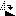

Wie im Bildvergleich verglichen wird


|
Wie im Bildvergleich verglichen wird |
|
|
Ausrichtung des Bildinhaltes Sie können Bilder miteinander vergleichen, deren Darstellung in der Größe verändert wurde, oder die gedreht, gespiegelt, abgeschnitten oder gestutzt wurden. Wählen Sie Autom. skalieren Wählen Sie Im Uhrzeigersinn drehen  oder Gegen den Uhrzeigersinn drehen Wählen Sie Horizontal spiegeln Wenn eines der Bilder eine gestutzte Version des anderen ist, können Sie die Maus über den Unterschiedanzeigebereich ziehen, um die Position der oberen linken Ecke des rechten Bildes auszurichten. Um diesen Versatz wieder auf (0,0) zurückzusetzen, wählen Sie Unterschiedsversatz zurücksetzen oder klicken Sie einfach auf die Versatzanzeige. Zur Feinausrichtung verwenden Sie die Pfeiltasten, um den Versatz jeweils um ein Pixel weiterzubewegen, oder Strg+Pfeiltasten, um den Versatz um mehrere Pixel weiterzuschieben. Beachten Sie, dass der Unterschiedsbereich ausgewählt sein muss, damit die Bewegung per Tastatur funktioniert. Toleranzmodus Wählen Sie Toleranzmodus Markieren Sie Unwichtige Unterschiede ignorieren Abweichungsgradmodus Wählen Sie Abweichungsgradmodus Mischungsmodus Wählen Sie Ansicht > Mischungsmodus |